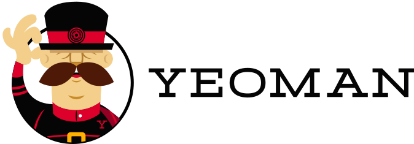
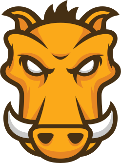
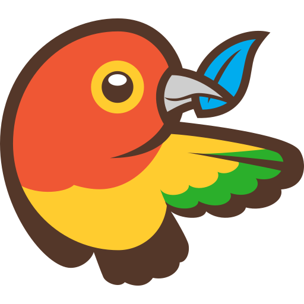
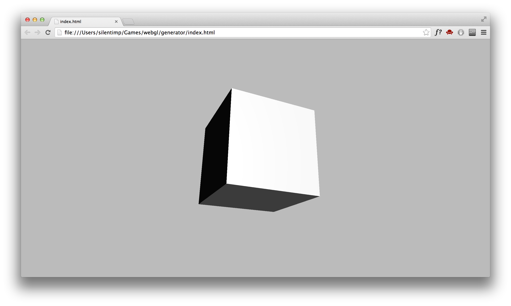
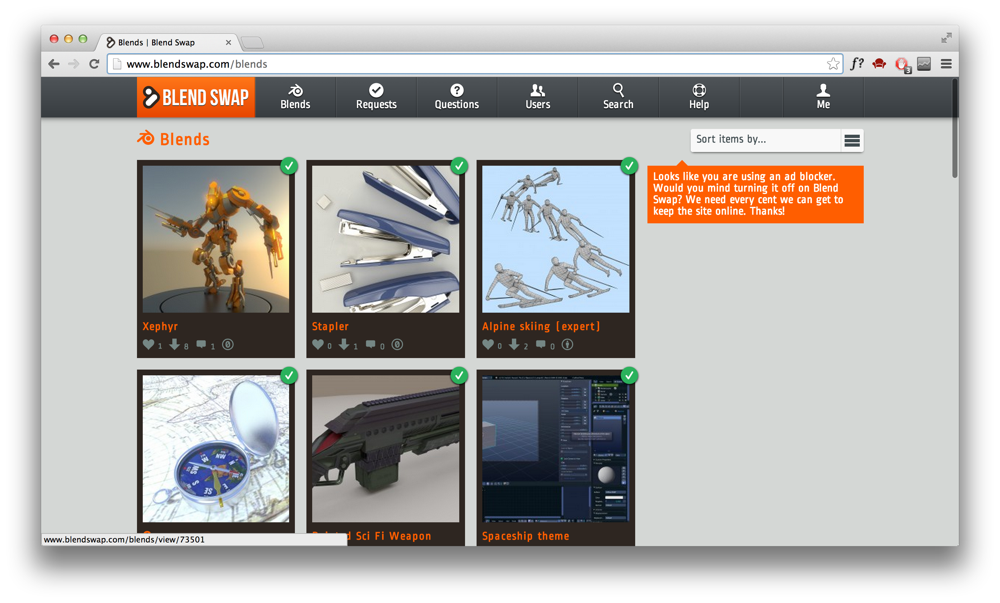
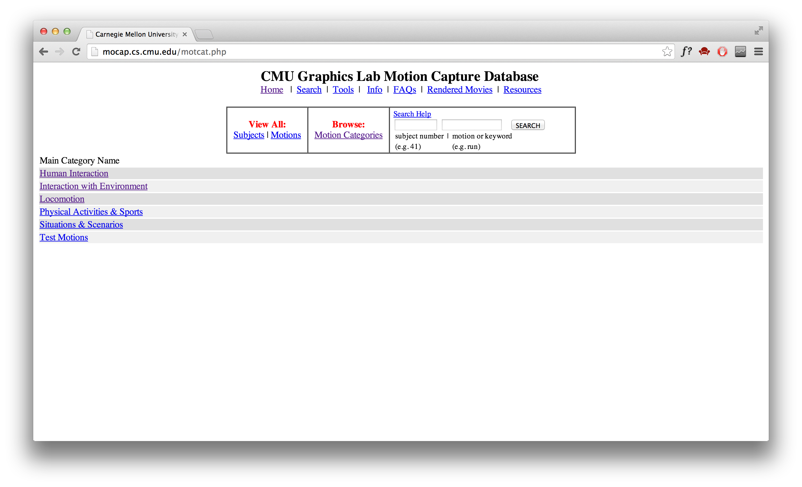
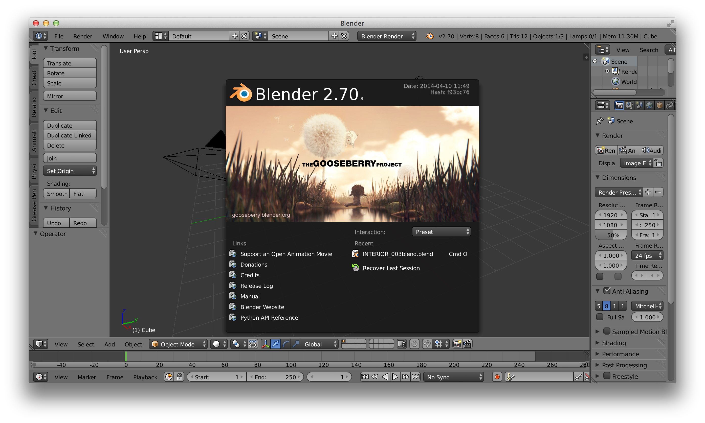
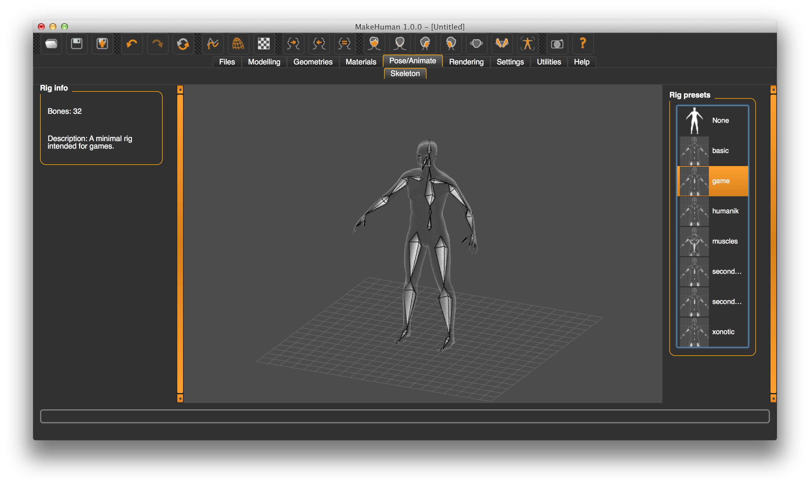
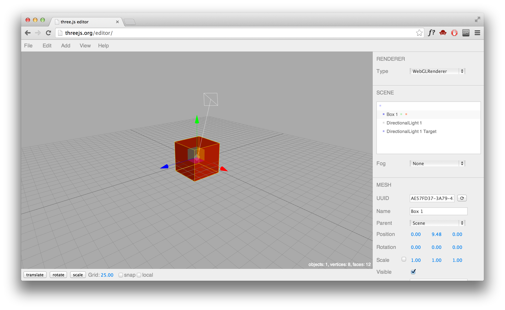

ну пожа-а-а-а-а-а-а-луйста
http://www.khronos.org/
http://goo.gl/hyJ8Y0
http://goo.gl/IkcI3z
The OpenGL ES Shading Language 3.1
http://goo.gl/u5dFg0
- IE 11+
- FF 4+
- Chrome 8+
- Opera 12.0 +
- Safari 5.1+
- iOS Safari ???
- Opera Mini -
- Opera Mobile 12+
- Android Browser -
- Blackberry Browse 10+
- Firefox for Android 26+
- IE Mobile
http://get.webgl.org/
Math is hard?
three.js!
threejs.org
- Math is hard (© Barbie)
- Разрабатывается с 2010 года
- Сильное комьюнити
- Достаточный объем материалов для изучения
- Возможность использования Wavefront (.obj) и Collada (.dae)
Инициализация проекта

http://yeoman.io/
Yo

Grunt

Bower
$ npm install -g yoГенератор Yeoman для проекта с использованием three.js
threejs-boilerplate
http://goo.gl/qSdClz
$ npm install -g
generator-threejs-boilerplate
$ yo threejs-boilerplate[?] Would you the default one? (Y/n) n
[?] Would you like to add require.js? (Y/n)
[?] Would you like to support webgl detection? (Y/n)
[?] Would you like to support window resize? (Y/n)
create Makefile
create index.html
create vendor/three.js/build/three.js
create vendor/threex.windowresize.js
create vendor/three.js/examples/js/Detector.js
create vendor/require.js/require.jsindex.html
Makefile
vendor/
threex.windowresize.js
require.js/
require.js
three.js/
build/
three.js
examples/js/
Detector.js
Bower
http://bower.io/
$ npm install -g bowerПакет Bower содержащий three.js
threejs
http://goo.gl/Q9XkQv
$ bower install threejsbower_components/
threejs/
build/
three.js<script src="bower_components/
threejs/
build/three.js">
</script><canvas id="screen"></canvas>var scene = new THREE.Scene();
camera = new THREE.PerspectiveCamera(
63, 4/3, 0.1, 1000
),
geometry = new THREE.CubeGeometry(.5, .5, .5),
material = new THREE.MeshNormalMaterial(),
cube = new THREE.Mesh(geometry, material),
renderer = new THREE.WebGLRenderer({
canvas: document.getElementById("screen"),
antialias: true
});Scene(
fog,
overrideMaterial,
autoUpdate)PerspectiveCamera(
fov,
aspect,
near,
far)CubeGeometry(
width,
height,
depth,
widthSegments,
heightSegments,
depthSegments)MeshNormalMaterial({
morphTargets,
shading,
wireframe,
wireframeLinewidth
})Mesh(geometry, material)WebGLRenderer(
canvas,
precision,
alpha,
premultipliedAlpha,
antialias,
stencil,
preserveDrawingBuffer,
maxLights)renderer.setSize(600, 400);
scene.add(cube);
camera.position.x = 0;
camera.position.y = 1;
camera.position.z = 2;
camera.lookAt(cube.position);function render() {
cube.rotation.y += .05;
requestAnimationFrame(render);
renderer.render(scene, camera);
}
render();Пакет Bower содержащий Three.js бутстрап
threestrap
http://goo.gl/0GiKKP
$ bower install threestrapbower_components/
threestrap/
build/
threestrap.js
threestrap-core.js
threestrap-extra.jsEmpty
- renderer
- bind
- size
- fill
- loop
- time
Core
- scene
- camera
- render
Extra
- stats
- controls
<script src="bower_components/
threestrap/
build/threestrap.js">
</script>var three = THREE.Bootstrap({
element: document.querySelector("#screen")
}),
geometry = new THREE.CubeGeometry(.5, .5, .5),
material = new THREE.MeshNormalMaterial(),
cube = new THREE.Mesh(geometry, material);three.scene.add(cube);
three.camera.position.set(0, 1, 2);
three.camera.lookAt(cube.position);
three.on("update", function () {
cube.rotation.y += .05;
});Плагин Grunt для получения JavaScript кода GLSL шейдеров
glsl-threejs
http://goo.gl/K4ssEr
$ npm install grunt-glsl-threejsЯ жажду фото-
реализма!
реализма!
var texture = THREE.ImageUtils.loadTexture(
"img/box.png"
);
var cube = new THREE.Mesh(
geometry,
new THREE.MeshPhongMaterial({
map: texture
}));А если
грани
куба —
разные?
грани
куба —
разные?
var texture1 = THREE.ImageUtils.loadTexture("img/t1.png"),
texture2 = THREE.ImageUtils.loadTexture("img/t2.png"),
texture3 = THREE.ImageUtils.loadTexture("img/t3.png"),
top_side = new THREE.MeshPhongMaterial({map: texture1}),
side_side = new THREE.MeshPhongMaterial({map: texture2}),
other_side = new THREE.MeshPhongMaterial({map: texture3});var material = new THREE.MeshFaceMaterial([
side_side,
side_side,
top_side, //top
other_side, //bottom
other_side,
other_side
]),
cube = new THREE.Mesh(geometry, material);Хочу что-то менее тривиальное!
Загрузка из формата COLLADA
Collada-Import-Three.js
http://goo.gl/7JEXnV
var loader = new THREE.ColladaLoader();
loader.load(
"collada/model2.dae",
modelLoaded);function modelLoaded(result){
collada = result.scene;
scene.add(collada);
render();
}result.dae.images
result.dae.geometries
result.dae.materialsПлагин Grunt для конвертации .OBJ в .JSON
grunt-three-obj
http://goo.gl/rTauLO
$ npm install grunt-three-obj --save-devmodule.exports = (grunt)->
grunt.initConfig(
three_obj:
dist:
src: ["./obj/*.obj"],
dest: "./json/"
)
grunt.loadNpmTasks
"grunt-three-obj"
grunt.registerTask
"default",
["three_obj"]$ gruntvar json_loader = new THREE.JSONLoader(),
model = null;
json_loader.load(
"examples/model/json/human.js",
modelLoaded,
"examples/model/json/");function modelLoaded(geometry, materials){
model = new THREE.Mesh(
geometry,
new THREE.MeshNormalMaterial());
model.position.z = 10;
model.position.y = -8;
scene.add(model);
camera.lookAt(
new THREE.Vector3(0,0,0)
);
}Плагины для экспорта в JSON из Blender, Maya, 3Ds MAX
http://goo.gl/6bnan4
Откуда брать модели?

http://blendswap.com/

http://goo.gl/G62KBp

http://blender.org/

http://makehuman.org/

http://threejs.org/editor/
Физика
Physijs
http://goo.gl/VGFccu
ammo.js
http://goo.gl/YTwlMB
canon.js

http://cannonjs.org/
Пример игры
- Создать сцену
- Добавить внешние модели
- Анимировать модели
- Добавить интерактивность
shield = new THREE.Object3D();
sphere = new THREE.SphereGeometry(
2, 8, 8, 0,
Math.PI*2, 0, Math.PI/7)
shield_mesh = new THREE.Mesh(
sphere,
new THREE.MeshNormalMaterial({
wireframe: true
}));
shield.add(shield_mesh);json_loader = new THREE.JSONLoader();
json_loader.load('json/planet.js', modelLoaded);
json_loader.load('json/rock.js', rockLoaded);
json_loader.load('json/moon.js', moonLoaded);function moonLoaded(geometry, materials){
moon = new THREE.Object3D();
moon.add(
new THREE.Mesh(
geometry,
new THREE.MeshNormalMaterial()
));
scene.add(moon);
}planet.rotation.x+=.001;
planet.rotation.y+=.001;
moon.rotation.z+=.01;document.addEventListener("keydown", arrowsDown);
document.addEventListener("keyup", arrowsUp);function arrowsDown(event){
var larr = 37,
rarr = 39;
switch(event.which){
case 37:
rollLeft = true;
break;
case 39:
rollRight = true;
break;
}}document.addEventListener("keydown", arrowsDown);
document.addEventListener("keyup", arrowsUp);if(rollRight===true){
shield.rotation.z-=.05;
}
if(rollLeft===true){
shield.rotation.z+=.05;
}var ray = new THREE.Ray(
planet.position,
rock.position
);
var distance = ray.distanceToPoint(
rock.position);
if (distance < 1 ) {
deleteFromList.push({
obj:rocks[index],
index:index
});
endgame();
};Антон Немцев
@silentimp
thesilentimp@gmail.com
skype: ravencry
http://goo.gl/fTe3ga